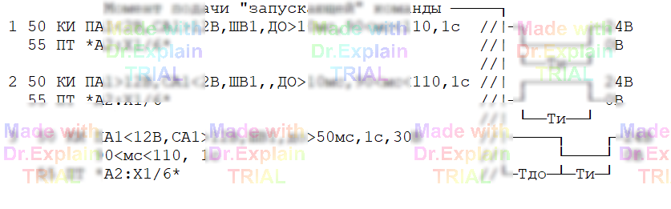

5.2.10 Команда КИ — контроль интервалов времени
Сообщения команды КИ см. [7, п. 3.7].
Команда КИ измеряет интервалы времени между моментами появления двух контролируемых сигналов заданного уровня, далее «Пуск» и «Стоп». В качестве измерителя используется АЦП. Команду КИ обязательно сопровождает «запускающая» команда подачи стимула — ПТ, ОТ или ГИ — которая формирует необходимые изменения на точках ОК.
5.2.10.1 Формат команды
КИ P…, C…, Ш…, ДО Tдо | НЕТ, Tи [, Tmax] [, Umax | Rmax]-
P…, C… — параметры стартового («Пуск») и стопового («Стоп») сигналов. Для каждого задают:
- измерительную шину (A1, B1, A2, B2);
- «уставку» — пороговое значение напряжения или сопротивления;
- направление перехода через уставку (
>— положительный фронт,<— отрицательный фронт).
- Ш… — общая шина измерителя.
- Tи — диапазон контроля интервала между «Пуск» и «Стоп».
- ДО Tдо — диапазон времени от начала запускающей команды до появления сигнала «Пуск». Вместо диапазона допустимо
НЕТ(для «ступеньки»). - Tmax — предельное время контроля (по умолчанию рассчитывается автоматически).
- Umax (или Rmax) — максимальное ожидаемое напряжение (или сопротивление); если опущено, берётся удвоенная максимальная из уставок.
Пример 1 (контроль напряжения)
50 КИ ПA1<4В, СA1>12В, ШB1, ДО >50мс,
240<мс<520, 1с, 20В
55 ПТ *A2:Х1/6*- Пуск: на A1 появляется напряжение < 4 В.
- Стоп: на A1 появляется напряжение > 12 В.
- Общая шина — B1;
ДО> 50 мс; интервалTи= 240–520 мс. Tmax= 1 с;Umax= 20 В.
Пример 2 (контроль сопротивления)
50 КИ ПA1<10Ом, СA1>100Ом, ШB1, ДО >50мс,
240<мс<520, 1с, 1кОм
55 ПТ *A2:Х1/6*Смысл аргументов тот же, но отслеживается связь по сопротивлению (предел измерения — 1 кΩ).
Поясняющая диаграмма

5.2.10.2 Требования к аргументам
- Шина сигнала «Стоп» должна совпадать с шиной сигнала «Пуск».
- Фронты обоих сигналов могут быть любыми (±) в любой комбинации.
- Если фронты противоположны, уставка положительного фронта должна превышать уставку отрицательного не менее чем на величину погрешности АЦП (см. п. 5.2.7.1 / 5.2.2.2).
- Если оба фронта положительные, уставка «Пуск» > «Стоп» на гистерезис; если оба отрицательные — наоборот.
- Общая шина (
Ш…) указывается послеP…иC…и должна отличаться от их шины. - Диапазон измеряемого U: 0.1 – 100 В; диапазон R: 2 Ω – 100 kΩ.
- Допустимые шины: A1, B1, A2, B2 (на общую подаётся «–», на сигнальную — «+» АЦП).
- Если
Umax/Rmaxопущен, он берётся = 2 × max( уставок ). - В
Tиобязательно верхняя граница; вTдодопускается открытый диапазон. - «Сигнал-ступенька» оформляется как
ДО НЕТ. - При опущенном
Tmaxон берётся = 2 × верхняя Tи (+ учёт Tдо).
⚠ Конфликт синтаксиса: не используйте форму c<ВРЕМЯ (символ «с» впереди). Замените её на <ВРЕМЯc.
Погрешность измерения
При импульсе (есть оба фронта):±(0.001 с + 0.01 × Tи)
При «ступеньке» (ДО НЕТ):±(0.010 с + 0.01 × Tдо)
Рекомендация: задавайте диапазоны контроля шире минимально‑допустимых, особенно если ПК будет исполняться на разных стендах АСК‑МКИ.